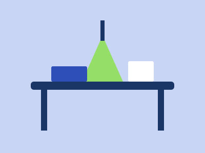
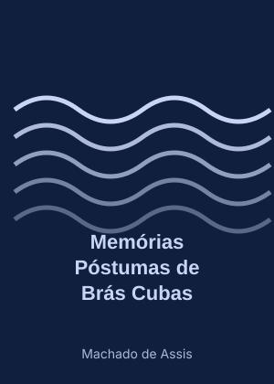
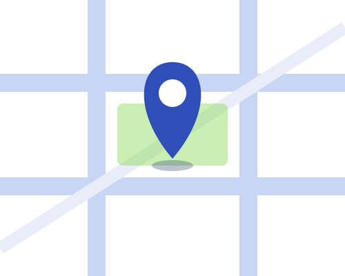

Dom Casmurro

Literatura brasileira
O clássico de Machado de Assis sobre memória, ciúme e a dúvida que atravessa gerações de leitores.
Saiba maisAcervo aberto 24 horas
Livros, artigos e materiais de apoio reunidos em um só lugar, para você estudar quando e onde quiser.
A Biblioteca Digital UniFECAF nasceu para aproximar o estudante do conhecimento. Aqui você encontra obras de referência dos seus cursos, clássicos da literatura e materiais complementares indicados pelos professores, tudo acessível pelo computador ou pelo celular.

O acervo é organizado por áreas do conhecimento e atualizado a cada semestre. Além da leitura on-line, oferecemos orientação para pesquisas, normalização de trabalhos acadêmicos e espaços de estudo nas unidades presenciais.

“Ler é estudar com a curiosidade ligada.”
Mais de 10 mil títulos disponíveis para consulta on-line.
Literatura brasileira
O clássico de Machado de Assis sobre memória, ciúme e a dúvida que atravessa gerações de leitores.
Saiba mais
Tecnologia
Lógica, algoritmos e primeiros passos em código, com exercícios comentados para praticar.
Saiba mais
Gestão e negócios
Planejamento, prazos e equipes: ferramentas práticas para tirar projetos do papel.
Saiba mais
Literatura brasileira
O defunto autor narra a própria vida com ironia, em uma das obras mais inovadoras do realismo.
Saiba mais
Tecnologia
HTML, CSS, layout responsivo e acessibilidade explicados com exemplos do dia a dia.
Saiba maisEducação
Como aprendemos, o que nos motiva e estratégias para estudar com mais foco e menos esforço.
Saiba mais
Localizada no campus de Taboão da Serra, reúne o acervo físico, salas de estudo individuais e em grupo, computadores para pesquisa e atendimento presencial com bibliotecários.
Segunda a sexta, das 8h às 22h · Sábado, das 8h às 14h

Os polos presenciais oferecem um ponto de acesso à biblioteca para estudantes de cursos a distância, com empréstimo de obras de referência e espaço para provas e encontros.
Horário conforme o polo · Consulte pelo portal do aluno
Acesso on-line ao acervo digital pelo AVA, com leitura no navegador, marcações, busca por palavra-chave e indicação de bibliografia por disciplina.
Disponível 24 horas, todos os dias
Precisa de ajuda para encontrar um livro, acessar o acervo digital ou formatar seu trabalho nas normas da ABNT? A equipe da biblioteca responde pelo portal do aluno e também presencialmente na Biblioteca Central.
